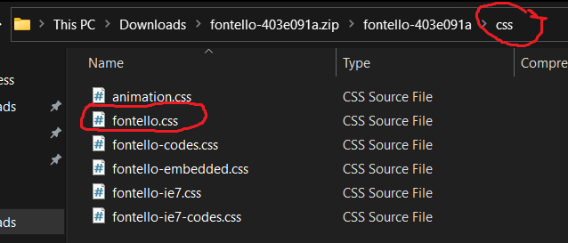
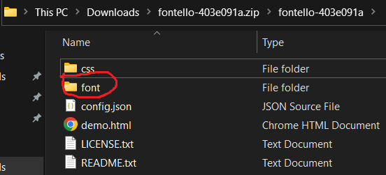
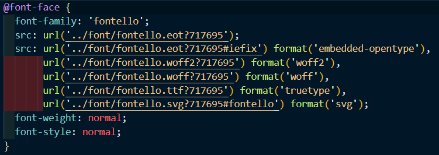
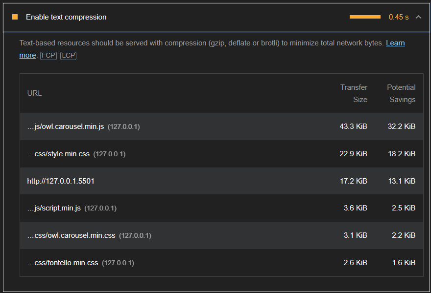
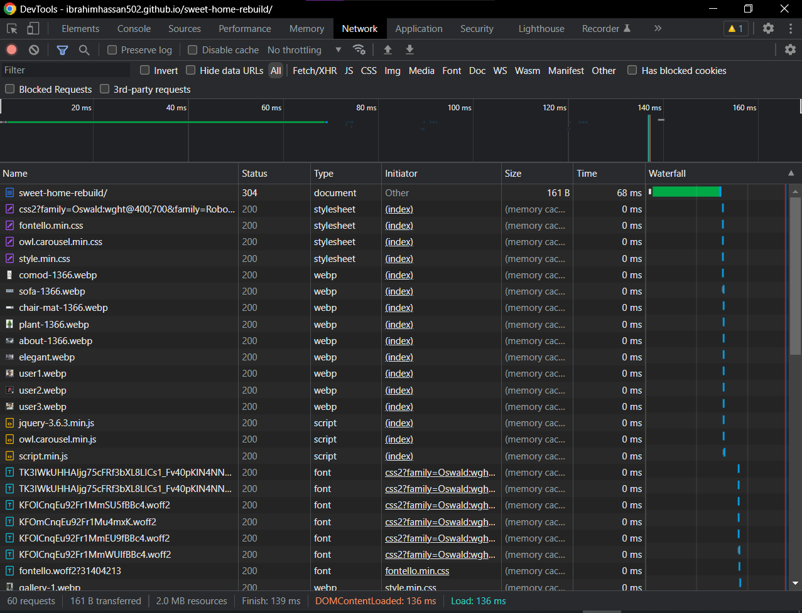
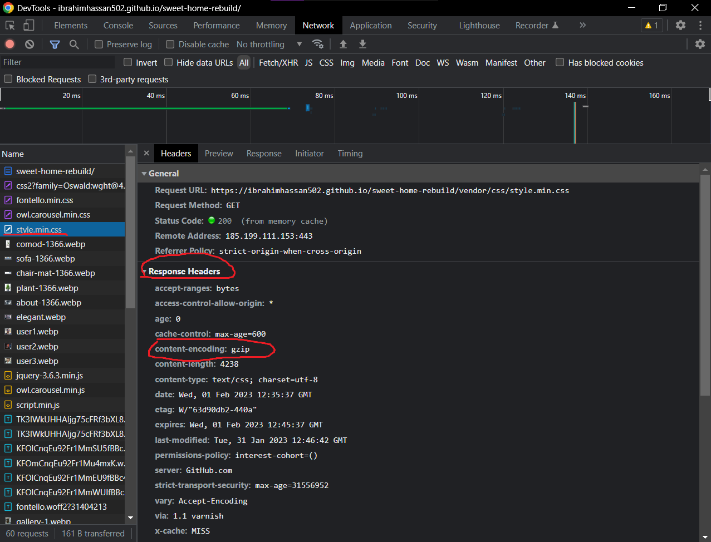

performance
use fontello instead of the whole icon library
fontello downloads only the css and the fonts of the icons you pick from the website


fontello font goes same as fontawesome webfonts folder you should place it outside of the css folder
enable text compression
it's backend stuff (something about adding header in the server configuration) and there are toturials for wordpress and other similiar platforms
but in our case github takes care of it
checking for text compression
- on the your website on the host (not locally) open console
- go to network tab 
- reload the website. Everything that has been requested from the server will be shown
- click on the file you want to check it's text compression
- go to the response headers
- and see the content-encoding 